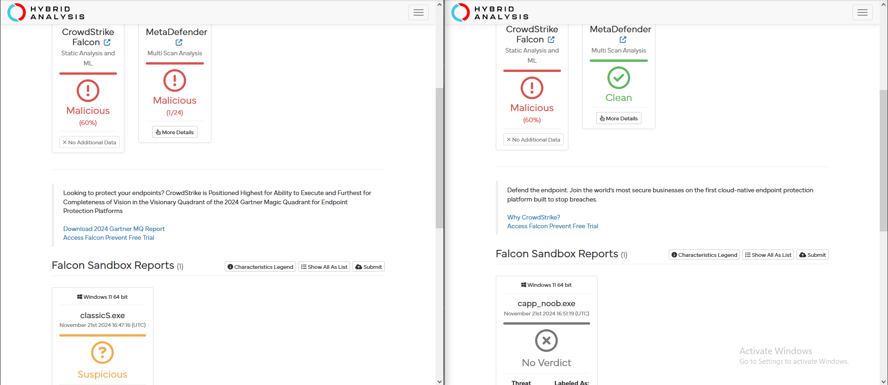
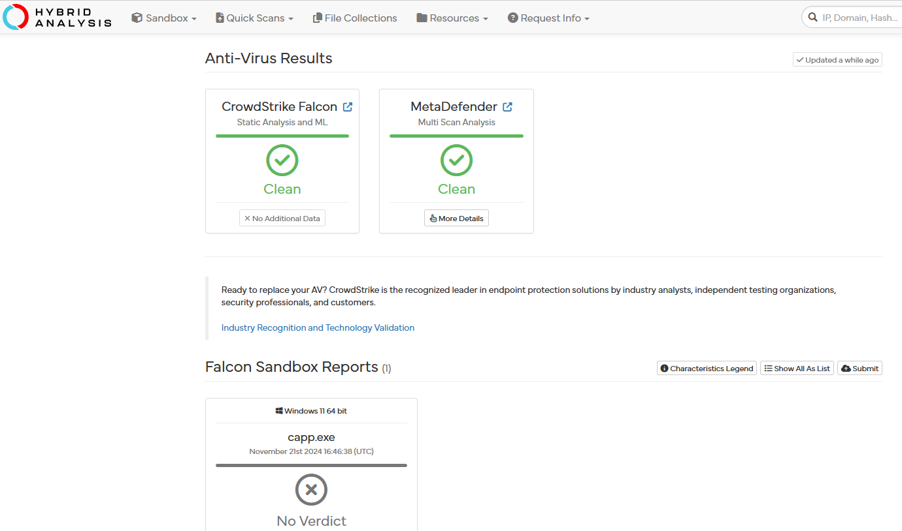
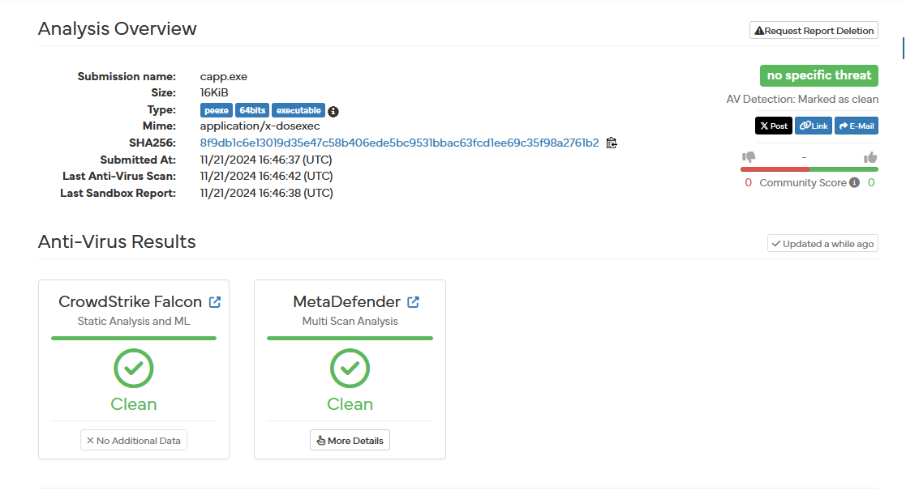

.Antivirus Evasion Techniques
This section will showcase some neat tricks and techniques to prevent anti-virus level detection of custom malware.
Sleep evasion
A known evasion technique to behavioral analysis by anti-viruses and malware sandboxes is to simply delay execution to force the sandbox to timeout, this way no malicious behavior indicators are detected and our malware can remain in stealth for a bit longer.
Focusing more on Windows, classic sleep evasion is usually implemented using functions such as Sleep or NtDelayExecution, but their usage is so heavily associated with malware that the unobfuscated execution of these functions might easily trigger AVs or at least raise suspicion levels.
Timed Mutexes
When looking back at this subject, I remembered that during my uni years, in my system's programming class, we used to program with semaphores and mutexes to synchronize threads when doing parallel computing.
So a mutex is basically a global variable that will indicate if it is safe to access variables or resources shared with other threads, you can use it to define a critical area in the code, in which only one thread may run at a time. A thread when entering the critical zone may lock the mutex variable, prevent other threads from entering, only unlocking it once all operations are done. Race conditions are a type of vulnerabilities that arise when developers don't correctly use synchronization tools such as these.
My idea here was to simply use mutexes to block the execution of the main thread for a given time and avoid common indicators of sandbox evasion.
Normally mutexes don't timeout, so you would kinda need to lock the thread with the malicious code and time another thread to eventually unlock the mutex. But with timed mutexes (C++11) we can lock a mutex, and afterwards use the try_lock_for function to attempt to lock the mutex again for a given amount of time. This will place the main thread in a state of Wait:WrAlertByThreadId, until either the mutex variable is unlocked or the function call times out.
Lets compile two examples in c++ and test it against a sandbox.
First the classic sleep winapi call:
classicS.cpp
#include "Windows.h"
int main()
{
Sleep(5000000);
return 0;
}
And the new trick, sleeping with timed mutexes:
capp_noob.cpp
#include <mutex>
std::timed_mutex mtx;
using namespace std::literals;
int main() {
mtx.lock();
bool result = mtx.try_lock_for(20min);
mtx.unlock();
return 0;
}
The results show a clear difference: 
After submitting both samples to a sandbox analysis on a win11 x64 VM, we can see on the left the classicS.exe behaviour was considered suspicious after submitted, but on the right we have the results for capp_noob.exe, which was considered inconclusive. This doesn't mean the technique was undetectable, just that the AV didn't have enough information to accurately classify the indicators it collected as malicious.
Also ignore crowdstrike falcon's 60% malicious static detection, the dam thing would consider its own family malicious if entrophy wasn't low enough. (Bypass for this in the future). Slightly lowering the entrophy will result in this outcome for capp_noob.exe: 
Which is now considered clean: 